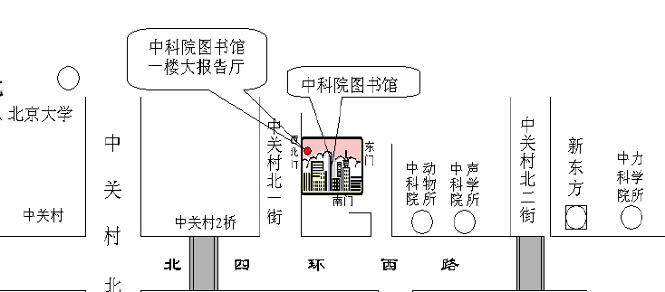

与Linux先驱David Rusling对话
一、活动简介
David Rusling 将于2003年3月19日（星期三）抵达北京，在京停留一天，与北京的Linux爱好者和嵌入式技术开发者进行面对面的沟通交流。AKA
Embedded 小组全程负责David Rusling在京之行的活动安排。具体安排请随时关注 http://www.akaembed.org
二、活动安排
(1) 14:15-14:30pm: 从中科院图书馆西北大门进入一楼大报告厅。
(2) 14:30-14:40pm: 陈渝介绍AKA 以及 AKA Embedded，聘请谭军和David Rusling 作为AKA Embedded
小组顾问委员会委员。
(3) 14:40-15:00pm: 谭军介绍ARM的历史和发展。
(4) 15:00-15:30pm: Rob Barnes介绍无线应用中的嵌入式操作系统。
(5) 15:30-16:10pm: David Rusling关于开放原码运动、自由软件、Linux、ARM以及 嵌入式Linux的演讲。
(6) 16:20-16:40pm: 问答。
三、时间和地点
2003年03月19日，星期三，14：30----16：50
从中科院图书馆西北大门进入图书馆一楼大报告厅（可容纳300人）。如下图所示：

四、David Rusling 简介
1957年 出生在英格兰北部。
1982年 伍尔弗汉普顿（Wolverhampton）大学毕业。
1984年 在Digital公司工作，主要从事桥接芯片和路由器的设计。并在Linux1.0发布后，开始与Linus Torvalds, Jay Estabrook,
Jim Paradis 和Jon Maddog的一起研究Linux在Alpha平台上的移植。接着还研究了linux在ARM平台上的实现。
1998年 加入ARM公司，现在是开发部的技术主管，负责编译器工具、调试工具和硬件的研发和销售。
David Rusling最早将Linux移植到Alpha机器，是《The Linux Kernel》的作者。

David Rusling 个人主页: www.rusling.uklinux.net
----------------------------------------
AKA 嵌入式兴趣小组 （AKA EMBEDDED）
具体安排请随时关注:http://www.akaembed.org